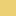

<!doctype html>
<html lang="en">
    <head>
        <meta charset="utf-8">
        <meta http-equiv="X-UA-Compatible" content="IE=edge">
        <meta name="viewport" content="initial-scale=1,user-scalable=no,maximum-scale=1,width=device-width">
        <meta name="mobile-web-app-capable" content="yes">
        <meta name="apple-mobile-web-app-capable" content="yes">
        <link rel="stylesheet" href="css/leaflet.css">
        <link rel="stylesheet" href="css/qgis2web.css"><link rel="stylesheet" href="css/fontawesome-all.min.css">
        <link rel="stylesheet" href="css/leaflet-control-geocoder.Geocoder.css">
        <style>
        html, body, #map {
            width: 100%;
            height: 100%;
            padding: 0;
            margin: 0;
        }
        </style>
        <title>Carte du parc Naturel</title>
    </head>
    <body>
        <logo>
    <div id="logo">
    
    </div>
</logo>
        <div id="map">
        </div>
        <script src="js/qgis2web_expressions.js"></script>
        <script src="js/leaflet.js"></script>
        <script src="js/leaflet-svg-shape-markers.min.js"></script>
        <script src="js/leaflet.rotatedMarker.js"></script>
        <script src="js/leaflet.pattern.js"></script>
        <script src="js/leaflet-hash.js"></script>
        <script src="js/Autolinker.min.js"></script>
        <script src="js/rbush.min.js"></script>
        <script src="js/labelgun.min.js"></script>
        <script src="js/labels.js"></script>
        <script src="js/leaflet-control-geocoder.Geocoder.js"></script>
        <script src="data/Zoneoptimaleduparc_2.js"></script>
        <script src="data/Zonecoeurduparc_3.js"></script>
        <script src="data/Zonedadhsionduparc_4.js"></script>
        <script src="data/Principauxsentiersduparc_5.js"></script>
        <script src="data/Secteursduparc_6.js"></script>
        <script src="data/Plansdeau_7.js"></script>
        <script src="data/Refugesduparc_8.js"></script>
        <script src="data/Miasonsduparc_9.js"></script>
        <script src="data/Limiteduparc_10.js"></script>
        <script>
        var map = L.map('map', {
            zoomControl:true, maxZoom:28, minZoom:1
        }).fitBounds([[42.56633325723752,-0.8851964314736731],[43.29589381562817,0.7079249756966312]]);
        var hash = new L.Hash(map);
        map.attributionControl.setPrefix('<a href="https://github.com/tomchadwin/qgis2web" target="_blank">qgis2web</a> &middot; <a href="https://leafletjs.com" title="A JS library for interactive maps">Leaflet</a> &middot; <a href="https://qgis.org">QGIS</a>');
        var autolinker = new Autolinker({truncate: {length: 30, location: 'smart'}});
        var bounds_group = new L.featureGroup([]);
        function setBounds() {
        }
        map.createPane('pane_OpenStreetMap_0');
        map.getPane('pane_OpenStreetMap_0').style.zIndex = 400;
        var layer_OpenStreetMap_0 = L.tileLayer('https://tile.openstreetmap.org/{z}/{x}/{y}.png', {
            pane: 'pane_OpenStreetMap_0',
            opacity: 1.0,
            attribution: '',
            minZoom: 1,
            maxZoom: 28,
            minNativeZoom: 0,
            maxNativeZoom: 19
        });
        layer_OpenStreetMap_0;
        map.addLayer(layer_OpenStreetMap_0);
        map.createPane('pane_StamenTerrain_1');
        map.getPane('pane_StamenTerrain_1').style.zIndex = 401;
        var layer_StamenTerrain_1 = L.tileLayer('https://stamen-tiles.a.ssl.fastly.net/terrain/{z}/{x}/{y}.png', {
            pane: 'pane_StamenTerrain_1',
            opacity: 1.0,
            attribution: '<a href="https://maps.stamen.com/">Map tiles by Stamen Design, under CC BY 3.0. Data by OpenStreetMap, under ODbL</a>',
            minZoom: 1,
            maxZoom: 28,
            minNativeZoom: 0,
            maxNativeZoom: 20
        });
        layer_StamenTerrain_1;
        map.addLayer(layer_StamenTerrain_1);
        function pop_Zoneoptimaleduparc_2(feature, layer) {
            var popupContent = '<table>\
                    <tr>\
                        <th scope="row">ID</th>\
                        <td>' + (feature.properties['ID'] !== null ? autolinker.link(feature.properties['ID'].toLocaleString()) : '') + '</td>\
                    </tr>\
                    <tr>\
                        <td colspan="2">' + (feature.properties['Libellé'] !== null ? autolinker.link(feature.properties['Libellé'].toLocaleString()) : '') + '</td>\
                    </tr>\
                </table>';
            layer.bindPopup(popupContent, {maxHeight: 400});
        }

        function style_Zoneoptimaleduparc_2_0() {
            return {
                pane: 'pane_Zoneoptimaleduparc_2',
                stroke: false, 
                fill: true,
                fillOpacity: 1,
                fillColor: 'rgba(229,189,57,0.7019607843137254)',
                interactive: true,
            }
        }
        map.createPane('pane_Zoneoptimaleduparc_2');
        map.getPane('pane_Zoneoptimaleduparc_2').style.zIndex = 402;
        map.getPane('pane_Zoneoptimaleduparc_2').style['mix-blend-mode'] = 'normal';
        var layer_Zoneoptimaleduparc_2 = new L.geoJson(json_Zoneoptimaleduparc_2, {
            attribution: '',
            interactive: true,
            dataVar: 'json_Zoneoptimaleduparc_2',
            layerName: 'layer_Zoneoptimaleduparc_2',
            pane: 'pane_Zoneoptimaleduparc_2',
            onEachFeature: pop_Zoneoptimaleduparc_2,
            style: style_Zoneoptimaleduparc_2_0,
        });
        bounds_group.addLayer(layer_Zoneoptimaleduparc_2);
        map.addLayer(layer_Zoneoptimaleduparc_2);
        function pop_Zonecoeurduparc_3(feature, layer) {
            var popupContent = '<table>\
                    <tr>\
                        <th scope="row">id</th>\
                        <td>' + (feature.properties['id'] !== null ? autolinker.link(feature.properties['id'].toLocaleString()) : '') + '</td>\
                    </tr>\
                    <tr>\
                        <td colspan="2"><strong>nom</strong><br />' + (feature.properties['nom'] !== null ? autolinker.link(feature.properties['nom'].toLocaleString()) : '') + '</td>\
                    </tr>\
                </table>';
            layer.bindPopup(popupContent, {maxHeight: 400});
        }

        function style_Zonecoeurduparc_3_0() {
            return {
                pane: 'pane_Zonecoeurduparc_3',
                stroke: false, 
                fill: true,
                fillOpacity: 1,
                fillColor: 'rgba(248,106,104,0.6)',
                interactive: true,
            }
        }
        map.createPane('pane_Zonecoeurduparc_3');
        map.getPane('pane_Zonecoeurduparc_3').style.zIndex = 403;
        map.getPane('pane_Zonecoeurduparc_3').style['mix-blend-mode'] = 'normal';
        var layer_Zonecoeurduparc_3 = new L.geoJson(json_Zonecoeurduparc_3, {
            attribution: '',
            interactive: true,
            dataVar: 'json_Zonecoeurduparc_3',
            layerName: 'layer_Zonecoeurduparc_3',
            pane: 'pane_Zonecoeurduparc_3',
            onEachFeature: pop_Zonecoeurduparc_3,
            style: style_Zonecoeurduparc_3_0,
        });
        bounds_group.addLayer(layer_Zonecoeurduparc_3);
        map.addLayer(layer_Zonecoeurduparc_3);
        function pop_Zonedadhsionduparc_4(feature, layer) {
            var popupContent = '<table>\
                    <tr>\
                        <th scope="row">id</th>\
                        <td>' + (feature.properties['id'] !== null ? autolinker.link(feature.properties['id'].toLocaleString()) : '') + '</td>\
                    </tr>\
                    <tr>\
                        <td colspan="2">' + (feature.properties['nom'] !== null ? autolinker.link(feature.properties['nom'].toLocaleString()) : '') + '</td>\
                    </tr>\
                </table>';
            layer.bindPopup(popupContent, {maxHeight: 400});
        }

        function style_Zonedadhsionduparc_4_0() {
            return {
                pane: 'pane_Zonedadhsionduparc_4',
                stroke: false, 
                fill: true,
                fillOpacity: 1,
                fillColor: 'rgba(60,190,65,0.6509803921568628)',
                interactive: true,
            }
        }
        map.createPane('pane_Zonedadhsionduparc_4');
        map.getPane('pane_Zonedadhsionduparc_4').style.zIndex = 404;
        map.getPane('pane_Zonedadhsionduparc_4').style['mix-blend-mode'] = 'normal';
        var layer_Zonedadhsionduparc_4 = new L.geoJson(json_Zonedadhsionduparc_4, {
            attribution: '',
            interactive: true,
            dataVar: 'json_Zonedadhsionduparc_4',
            layerName: 'layer_Zonedadhsionduparc_4',
            pane: 'pane_Zonedadhsionduparc_4',
            onEachFeature: pop_Zonedadhsionduparc_4,
            style: style_Zonedadhsionduparc_4_0,
        });
        bounds_group.addLayer(layer_Zonedadhsionduparc_4);
        map.addLayer(layer_Zonedadhsionduparc_4);
        function pop_Principauxsentiersduparc_5(feature, layer) {
            var popupContent = '<table>\
                    <tr>\
                        <td colspan="2">' + (feature.properties['IDPNP'] !== null ? autolinker.link(feature.properties['IDPNP'].toLocaleString()) : '') + '</td>\
                    </tr>\
                </table>';
            layer.bindPopup(popupContent, {maxHeight: 400});
        }

        function style_Principauxsentiersduparc_5_0() {
            return {
                pane: 'pane_Principauxsentiersduparc_5',
                opacity: 1,
                color: 'rgba(210,202,198,1.0)',
                dashArray: '',
                lineCap: 'square',
                lineJoin: 'bevel',
                weight: 1.0,
                fillOpacity: 0,
                interactive: true,
            }
        }
        map.createPane('pane_Principauxsentiersduparc_5');
        map.getPane('pane_Principauxsentiersduparc_5').style.zIndex = 405;
        map.getPane('pane_Principauxsentiersduparc_5').style['mix-blend-mode'] = 'normal';
        var layer_Principauxsentiersduparc_5 = new L.geoJson(json_Principauxsentiersduparc_5, {
            attribution: '',
            interactive: true,
            dataVar: 'json_Principauxsentiersduparc_5',
            layerName: 'layer_Principauxsentiersduparc_5',
            pane: 'pane_Principauxsentiersduparc_5',
            onEachFeature: pop_Principauxsentiersduparc_5,
            style: style_Principauxsentiersduparc_5_0,
        });
        bounds_group.addLayer(layer_Principauxsentiersduparc_5);
        map.addLayer(layer_Principauxsentiersduparc_5);
        function pop_Secteursduparc_6(feature, layer) {
            var popupContent = '<table>\
                    <tr>\
                        <th scope="row">ID</th>\
                        <td>' + (feature.properties['ID'] !== null ? autolinker.link(feature.properties['ID'].toLocaleString()) : '') + '</td>\
                    </tr>\
                    <tr>\
                        <td colspan="2">' + (feature.properties['Nom'] !== null ? autolinker.link(feature.properties['Nom'].toLocaleString()) : '') + '</td>\
                    </tr>\
                </table>';
            layer.bindPopup(popupContent, {maxHeight: 400});
        }

        function style_Secteursduparc_6_0() {
            return {
                pane: 'pane_Secteursduparc_6',
                opacity: 1,
                color: 'rgba(251,216,110,1.0)',
                dashArray: '',
                lineCap: 'butt',
                lineJoin: 'miter',
                weight: 1.0, 
                fillOpacity: 0,
                interactive: true,
            }
        }
        map.createPane('pane_Secteursduparc_6');
        map.getPane('pane_Secteursduparc_6').style.zIndex = 406;
        map.getPane('pane_Secteursduparc_6').style['mix-blend-mode'] = 'normal';
        var layer_Secteursduparc_6 = new L.geoJson(json_Secteursduparc_6, {
            attribution: '',
            interactive: true,
            dataVar: 'json_Secteursduparc_6',
            layerName: 'layer_Secteursduparc_6',
            pane: 'pane_Secteursduparc_6',
            onEachFeature: pop_Secteursduparc_6,
            style: style_Secteursduparc_6_0,
        });
        bounds_group.addLayer(layer_Secteursduparc_6);
        map.addLayer(layer_Secteursduparc_6);
        function pop_Plansdeau_7(feature, layer) {
            var popupContent = '<table>\
                    <tr>\
                        <th scope="row">ID</th>\
                        <td>' + (feature.properties['ID'] !== null ? autolinker.link(feature.properties['ID'].toLocaleString()) : '') + '</td>\
                    </tr>\
                    <tr>\
                        <th scope="row">NATURE</th>\
                        <td>' + (feature.properties['NATURE'] !== null ? autolinker.link(feature.properties['NATURE'].toLocaleString()) : '') + '</td>\
                    </tr>\
                    <tr>\
                        <td colspan="2">' + (feature.properties['TOPONYME'] !== null ? autolinker.link(feature.properties['TOPONYME'].toLocaleString()) : '') + '</td>\
                    </tr>\
                    <tr>\
                        <td colspan="2">' + (feature.properties['SUPERFICIE'] !== null ? autolinker.link(feature.properties['SUPERFICIE'].toLocaleString()) : '') + '</td>\
                    </tr>\
                    <tr>\
                        <td colspan="2">' + (feature.properties['area_ha'] !== null ? autolinker.link(feature.properties['area_ha'].toLocaleString()) : '') + '</td>\
                    </tr>\
                </table>';
            layer.bindPopup(popupContent, {maxHeight: 400});
        }

        function style_Plansdeau_7_0() {
            return {
                pane: 'pane_Plansdeau_7',
                stroke: false, 
                fill: true,
                fillOpacity: 1,
                fillColor: 'rgba(166,206,227,1.0)',
                interactive: true,
            }
        }
        map.createPane('pane_Plansdeau_7');
        map.getPane('pane_Plansdeau_7').style.zIndex = 407;
        map.getPane('pane_Plansdeau_7').style['mix-blend-mode'] = 'normal';
        var layer_Plansdeau_7 = new L.geoJson(json_Plansdeau_7, {
            attribution: '',
            interactive: true,
            dataVar: 'json_Plansdeau_7',
            layerName: 'layer_Plansdeau_7',
            pane: 'pane_Plansdeau_7',
            onEachFeature: pop_Plansdeau_7,
            style: style_Plansdeau_7_0,
        });
        bounds_group.addLayer(layer_Plansdeau_7);
        map.addLayer(layer_Plansdeau_7);
        function pop_Refugesduparc_8(feature, layer) {
            var popupContent = '<table>\
                    <tr>\
                        <th scope="row">Type</th>\
                        <td>' + (feature.properties['Type'] !== null ? autolinker.link(feature.properties['Type'].toLocaleString()) : '') + '</td>\
                    </tr>\
                    <tr>\
                        <th scope="row">Propriete</th>\
                        <td>' + (feature.properties['Propriete'] !== null ? autolinker.link(feature.properties['Propriete'].toLocaleString()) : '') + '</td>\
                    </tr>\
                    <tr>\
                        <th scope="row">Nom</th>\
                        <td>' + (feature.properties['Nom'] !== null ? autolinker.link(feature.properties['Nom'].toLocaleString()) : '') + '</td>\
                    </tr>\
                </table>';
            layer.bindPopup(popupContent, {maxHeight: 400});
        }

        function style_Refugesduparc_8_0() {
            return {
                pane: 'pane_Refugesduparc_8',
                radius: 5.2,
                opacity: 1,
                color: 'rgba(35,35,35,1.0)',
                dashArray: '',
                lineCap: 'butt',
                lineJoin: 'miter',
                weight: 1.0,
                fill: true,
                fillOpacity: 1,
                fillColor: 'rgba(39,180,39,1.0)',
                interactive: true,
            }
        }
        map.createPane('pane_Refugesduparc_8');
        map.getPane('pane_Refugesduparc_8').style.zIndex = 408;
        map.getPane('pane_Refugesduparc_8').style['mix-blend-mode'] = 'normal';
        var layer_Refugesduparc_8 = new L.geoJson(json_Refugesduparc_8, {
            attribution: '',
            interactive: true,
            dataVar: 'json_Refugesduparc_8',
            layerName: 'layer_Refugesduparc_8',
            pane: 'pane_Refugesduparc_8',
            onEachFeature: pop_Refugesduparc_8,
            pointToLayer: function (feature, latlng) {
                var context = {
                    feature: feature,
                    variables: {}
                };
                return L.shapeMarker(latlng, style_Refugesduparc_8_0(feature));
            },
        });
        bounds_group.addLayer(layer_Refugesduparc_8);
        map.addLayer(layer_Refugesduparc_8);
        function pop_Miasonsduparc_9(feature, layer) {
            var popupContent = '<table>\
                    <tr>\
                        <th scope="row">Nom</th>\
                        <td>' + (feature.properties['Nom'] !== null ? autolinker.link(feature.properties['Nom'].toLocaleString()) : '') + '</td>\
                    </tr>\
                </table>';
            layer.bindPopup(popupContent, {maxHeight: 400});
        }

        function style_Miasonsduparc_9_0() {
            return {
                pane: 'pane_Miasonsduparc_9',
                radius: 4.4,
                stroke: false,
                fill: true,
                fillOpacity: 1,
                fillColor: 'rgba(0,0,0,1.0)',
                interactive: true,
            }
        }
        map.createPane('pane_Miasonsduparc_9');
        map.getPane('pane_Miasonsduparc_9').style.zIndex = 409;
        map.getPane('pane_Miasonsduparc_9').style['mix-blend-mode'] = 'normal';
        var layer_Miasonsduparc_9 = new L.geoJson(json_Miasonsduparc_9, {
            attribution: '',
            interactive: true,
            dataVar: 'json_Miasonsduparc_9',
            layerName: 'layer_Miasonsduparc_9',
            pane: 'pane_Miasonsduparc_9',
            onEachFeature: pop_Miasonsduparc_9,
            pointToLayer: function (feature, latlng) {
                var context = {
                    feature: feature,
                    variables: {}
                };
                return L.shapeMarker(latlng, style_Miasonsduparc_9_0(feature));
            },
        });
        bounds_group.addLayer(layer_Miasonsduparc_9);
        map.addLayer(layer_Miasonsduparc_9);
        function pop_Limiteduparc_10(feature, layer) {
            var popupContent = '<table>\
                    <tr>\
                        <th scope="row">Type</th>\
                        <td>' + (feature.properties['id'] !== null ? autolinker.link(feature.properties['id'].toLocaleString()) : '') + '</td>\
                    </tr>\
                    <tr>\
                        <th scope="row">Propriétaire</th>\
                        <td>' + (feature.properties['nom'] !== null ? autolinker.link(feature.properties['nom'].toLocaleString()) : '') + '</td>\
                    </tr>\
                </table>';
            layer.bindPopup(popupContent, {maxHeight: 400});
        }

        function style_Limiteduparc_10_0() {
            return {
                pane: 'pane_Limiteduparc_10',
                opacity: 1,
                color: 'rgba(219,30,42,1.0)',
                dashArray: '',
                lineCap: 'square',
                lineJoin: 'bevel',
                weight: 3.0,
                fillOpacity: 0,
                interactive: true,
            }
        }
        map.createPane('pane_Limiteduparc_10');
        map.getPane('pane_Limiteduparc_10').style.zIndex = 410;
        map.getPane('pane_Limiteduparc_10').style['mix-blend-mode'] = 'normal';
        var layer_Limiteduparc_10 = new L.geoJson(json_Limiteduparc_10, {
            attribution: '',
            interactive: true,
            dataVar: 'json_Limiteduparc_10',
            layerName: 'layer_Limiteduparc_10',
            pane: 'pane_Limiteduparc_10',
            onEachFeature: pop_Limiteduparc_10,
            style: style_Limiteduparc_10_0,
        });
        bounds_group.addLayer(layer_Limiteduparc_10);
        map.addLayer(layer_Limiteduparc_10);
            var title = new L.Control();
            title.onAdd = function (map) {
                this._div = L.DomUtil.create('div', 'info');
                this.update();
                return this._div;
            };
            title.update = function () {
                this._div.innerHTML = '<h2>Carte du parc Naturel</h2>';
            };
            title.addTo(map);
        var osmGeocoder = new L.Control.Geocoder({
            collapsed: true,
            position: 'topleft',
            text: 'Search',
            title: 'Testing'
        }).addTo(map);
        document.getElementsByClassName('leaflet-control-geocoder-icon')[0]
        .className += ' fa fa-search';
        document.getElementsByClassName('leaflet-control-geocoder-icon')[0]
        .title += 'Search for a place';
        var baseMaps = {};
        L.control.layers(baseMaps,{' Limite du parc': layer_Limiteduparc_10,' Miasons du parc': layer_Miasonsduparc_9,' Refuges du parc': layer_Refugesduparc_8,' Plans d\'eau': layer_Plansdeau_7,' Secteurs du parc': layer_Secteursduparc_6,' Principaux sentiers du parc': layer_Principauxsentiersduparc_5,' Zone d\'adhésion du parc': layer_Zonedadhsionduparc_4,' Zone coeur du parc': layer_Zonecoeurduparc_3,' Zone optimale du parc': layer_Zoneoptimaleduparc_2,"Stamen Terrain": layer_StamenTerrain_1,"OpenStreetMap": layer_OpenStreetMap_0,},{collapsed:false}).addTo(map);
        setBounds();
        var i = 0;
        layer_Secteursduparc_6.eachLayer(function(layer) {
            var context = {
                feature: layer.feature,
                variables: {}
            };
            layer.bindTooltip((layer.feature.properties['Nom'] !== null?String('<div style="color: #323232; font-size: 6pt; font-family: \'Liberation Sans\', sans-serif;">' + layer.feature.properties['Nom']) + '</div>':''), {permanent: true, offset: [-0, -16], className: 'css_Secteursduparc_6'});
            labels.push(layer);
            totalMarkers += 1;
              layer.added = true;
              addLabel(layer, i);
              i++;
        });
        resetLabels([layer_Secteursduparc_6]);
        map.on("zoomend", function(){
            resetLabels([layer_Secteursduparc_6]);
        });
        map.on("layeradd", function(){
            resetLabels([layer_Secteursduparc_6]);
        });
        map.on("layerremove", function(){
            resetLabels([layer_Secteursduparc_6]);
        });
        </script>
    </body>
</html>
